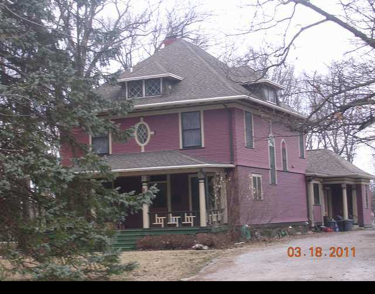

1312 E. Washington

- Clifford and Frances Coolidge Residence
- Built in 1900 is another Colonial Victorian design
- Note the Cameo window, diamond glass attic windows, narrow Doric pillars, Japanese-like fretted balusters, and Norman kick room
- Coolidge was a business owner with interst in manufacturing and ownership of a large laundry business